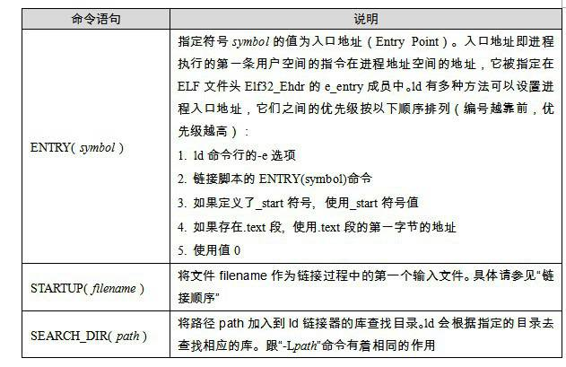
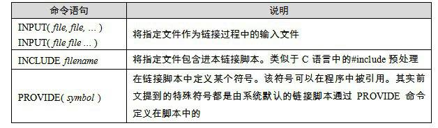

4.6 链接过程控制
绝大部分情况下，我们使用链接器提供的默认链接规则对目标文件进行链接。这在一般情况下是没有问题的，但对于一些特殊要求的程序，比如操作系统内核、BIOS（Basic Input Output System）或一些在没有操作系统的情况下运行的程序（如引导程序Boot Loader或者嵌入式系统的程序，或者有一些脱离操作系统的硬盘分区软件PQMagic等），以及另外的一些须要特殊的链接过程的程序，如一些内核驱动程序等，它们往往受限于一些特殊的条件，如须要指定输出文件的各个段虚拟地址、段的名称、段存放的顺序等，因为这些特殊的环境，特别是某些硬件条件的限制，往往对程序的各个段的地址有着特殊的要求。
由于整个链接过程有很多内容须要确定：使用哪些目标文件？使用哪些库文件？是否在最终可执行文件中保留调试信息、输出文件格式（可执行文件还是动态链接库）？还要考虑是否要导出某些符号以供调试器或程序本身或其他程序使用等。
提示
操作系统内核。从本质上来讲，它本身也是一个程序。比如Windows的内核ntoskrnl.exe就是一个我们平常看到的PE文件，它的位置位于\WINDOWS\system32\ntoskrnl.exe。很多人误以为Window操作系统的内核很庞大，由很多文件组成。这是一个误解，其实真正的Windows内核就是这个文件。
4.6.1 链接控制脚本
链接器一般都提供多种控制整个链接过程的方法，以用来产生用户所须要的文件。一般链接器有如下三种方法。
- 使用命令行来给链接器指定参数，我们前面所使用的ld的-o、-e参数就属于这类。这种方法我们已经在前面使用很多次了。
- 将链接指令存放在目标文件里面，编译器经常会通过这种方法向链接器传递指令。方法也比较常见，只是我们平时很少关注，比如VISUAL C++编译器会把链接参数放在PE目标文件的.drectve段以用来传递参数。具体可以参考PE/COFF一节中的.drectve段介绍。
- 使用链接控制脚本，使用链接控制脚本方法就是本节要介绍的，也是最为灵活、最为强大的链接控制方法。
由于各个链接器平台的链接控制过程各不相同，我们只能侧重一个平台来介绍。ld链接器的链接脚本功能非常强大，我们接下来以ld作为主要介绍对象。VISUAL C++也允许使用脚本来控制整个链接过程，VISUAL C++把这种控制脚本叫做模块定义文件（Module-Definition File），它们的扩展名一般为.def。
前面我们在使用ld链接器的时候，没有指定链接脚本，其实ld 在用户没有指定链接脚本的时候会使用默认链接脚本。我们可以使用下面的命令行来查看ld默认的链接脚本：
$ ld -verbose
默认的ld链接脚本存放在/usr/lib/ldscripts/下，不同的机器平台、输出文件格式都有相应的链接脚本。比如Intel IA32下的普通可执行ELF文件链接脚本文件为elf_i386.x；IA32下共享库的链接脚本文件为elf_i386.xs等。具体可以看每个文件的注释。ld会根据命令行要求使用相应的链接脚本文件来控制链接过程，当我们使用ld来链接生成一个可执行文件的时候，它就会使用elf_i386.x作为链接控制脚本；当我们使用ld来生成一个共享目标文件的时候，它就会使用elf_i386.xs作为链接控制脚本。
当然，为了更加精确地控制链接过程，我们可以自己写一个脚本，然后指定该脚本为链接控制脚本。比如可以使用-T参数：
$ ld -T link.script
4.6.2 最"小"的程序
为了演示链接的控制过程，我们接着要做一个最小的程序：这个程序的功能是在终端上输出"Hello world!"。可能很多人的第一反应就是我们学C语言时候的那个经典的使用printf的helloworld，然后对着屏幕盲打一遍该程序源代码后编译链接一气呵成，连鼠标都没有移动一下，非常好，你的C语言基础很扎实。但是我们这里要演示的程序稍微有所不同。
- 首先，经典的helloworld使用了printf函数，该函数是系统C语言库的一部分。为了使用该函数，我们必须在链接时将C语言库与程序的目标文件链接产生最终可执行文件。我们希望"小程序"能够脱离C语言运行库，使得它成为一个独立于任何库的纯正的"程序"。
- 其次，经典的helloworld由于使用了库，所以必须有main函数。我们知道一般程序的入口在库的_start，由库负责初始化后调用main函数来执行程序的主体部分。为了不使用main这个我们已经感到厌烦的函数名，"小程序"使用nomain作为整个程序的入口。
- 接着，经典的helloworld会产生多个段：main程序的指令部分会产生.text段、字符串常量"Hello world!\n"会被放在数据段或只读数据段，还有C库所包含的各种段。为了演示ld链接脚本的控制过程，我们将"小程序"的所有段都合并到一个叫"tinytext"的段，注意：这个段是我们任意命名的，是由链接脚本控制链接过程生成的。
TinyHelloWorld.c源代码如下：
char* str = "Hello world!\n";
void print()
{
asm( "movl $13,%%edx \n\t"
"movl %0,%%ecx \n\t"
"movl $0,%%ebx \n\t"
"movl $4,%%eax \n\t"
"int $0x80 \n\t"
::"r"(str):"edx","ecx","ebx");
}
void exit()
{
asm( "movl $42,%ebx \n\t"
"movl $1,%eax \n\t"
"int $0x80 \n\t" );
}
void nomain()
{
print();
exit();
}
从源代码我们可以看到，程序入口为nomain()函数，然后该函数调用print()函数，打印"Hello World"，接着调用exit()函数，结束进程。这里的print函数使用了Linux的WRITE系统调用，exit()函数使用了EXIT系统调用。这里我们使用了GCC内嵌汇编，对这种内嵌汇编格式不熟悉的话，请参照GCC手册关于内嵌汇编的部分。这里简单介绍系统调用：系统调用通过0x80中断实现，其中eax为调用号，ebx、ecx、edx等通用寄存器用来传递参数，比如WRITE调用是往一个文件句柄写入数据，如果用C语言来描述它的原型就是：
int write(int filedesc, char* buffer, int size);
- WRITE调用的调用号为4，则eax = 0。
- filedesc表示被写入的文件句柄，使用ebx寄存器传递，我们这里是要往默认终端（stdout）输出，它的文件句柄为0，即ebx = 0。
- buffer表示要写入的缓冲区地址，使用ecx寄存器传递，我们这里要输出字符串str，所以ecx = str。
- size表示要写入的字节数，使用edx寄存器传递，字符串"Hello world!\n"长度为13字节，所以edx = 13。
同理，EXIT系统调用中，ebx表示进程退出码（Exit Code），比如我们平时的main程序中的return的数值会返回给系统库，由系统库将该数值传递给EXIT系统调用。这样父进程就可以接收到子进程的退出码。EXIT系统调用的调用号为1，即eax = 1。你可以通过下面的方法得到上一条bash命令执行的程序的退出码）：
$ ./TinyHelloWorld
$ echo $?
42
这里要调用EXIT结束进程是因为如果是普通程序，main()函数结束后控制权返回给系统库，由系统库负责调用EXIT，退出进程。我们这里的nomain()结束后系统控制权不会返回，可能会执行到nomain()后面不正常的指令，最后导致进程异常退出。
关于系统库已经系统调用的细节我们在这里不详细展开，将在第12章进行更为详细的介绍。
我们先不急于使用链接脚本，而先使用普通命令行的方式来编译和链接TinyHelloWorld.c：
$ gcc -c -fno-builtin TinyHelloWorld.c
$ ld -static -e nomain -o TinyHelloWorld TinyHelloWorld.o
第一步是使用GCC将TinyHelloWorld.c编译成TinyHelloWorld.o，接着使用ld将TinyHelloWorld.o链接成可执行文件TinyHelloWorld。这里GCC和ld的参数的意义如下。
- -fno-builtin GCC编译器提供了很多内置函数（Built-in Function），它会把一些常用的C库函数替换成编译器的内置函数，以达到优化的功能。比如GCC会将只有字符串参数的printf函数替换成puts，以节省格式解析的时间。exit()函数也是GCC的内置参数之一，所以我们要使用-fno-builtin参数来关闭GCC内置函数功能。
- -static 这个参数表示ld将使用静态链接的方式来链接程序，而不是使用默认的动态链接的方式。
- -e nomain 表示该程序的入口函数为nomain，还记得ELF文件头Elf32_Ehdr的e_entry成员吗？这个参数就是将ELF文件头的e_entry成员赋值成nomain函数的地址。
- -o TinyHelloWorld 表示指定输出可执行文件名为TinyHelloWorld。
我们得到了一个924字节（依赖于系统环境）的ELF可执行文件，运行它以后能够正确打印"Hello world!"并且正常退出。但是当我们用objdump或readelf查看TinyHelloWorld这个文件时，会发现它有4个段：.text、.rodata、.data和.comment。通过前面的介绍我们可以猜到：
- .text 肯定保存的是程序的指令，它是只读的。
- .rodata 保存的是字符串"Hello World!\n"，它也是只读的。
- .data 保存的是str全局变量，看上去它是可读写的，但我们并没有在程序中改写该变量，所以实际上它也是只读的。
- .comment 保存的是编译器和系统版本信息，这些信息也是只读的。由于.comment里面保存的数据并不关键，对于程序的运行没有作用，所以可以将其丢弃。
鉴于这些段的属性如此相似，原则上讲，我们可以把它们合并到一个段里面，该段的属性是可执行、可读的，包含程序的数据和指令。为了达到这个目的，我们必须使用ld链接脚本来控制链接过程。
4.6.3 使用ld链接脚本
如果把整个链接过程比作一台计算机，那么ld链接器就是计算机的CPU，所有的目标文件、库文件就是输入，链接结果输出的可执行文件就是输出，而链接控制脚本正是这台计算机的"程序"，它控制CPU的运行，以"程序"要求的方式将输入加工成所须要的输出结果。链接控制脚本"程序"使用一种特殊的语言写成，即ld的链接脚本语言，这种语言并不复杂，只有为数不多的几种操作。
无论是输出文件还是输入文件，它们的主要的数据就是文件中的各种段，我们把输入文件中的段称为输入段（Input Sections），输出文件中的段称为输出段（Output Sections）。简单来讲，控制链接过程无非是控制输入段如何变成输出段，比如哪些输入段要合并一个输出段，哪些输入段要丢弃；指定输出段的名字、装载地址、属性，等等。我们先来看看TinyHelloWorld的链接脚本TinyHelloWorld.lds（一般链接脚本名都以lds作为扩展名ld script），有个感性的认识：
ENTRY(nomain)
SECTIONS
{
. = 0x08048000 + SIZEOF_HEADERS;
tinytext : { *(.text) *(.data) *(.rodata) }
/DISCARD/ : { *(.comment) }
}
这是一个非常简单的链接脚本，第一行的ENTRY(nomain)指定了程序的入口为nomain()函数；后面的SECTIONS命令一般是链接脚本的主体，这个命令指定了各种输入段到输出段的变换，SECTIONS后面紧跟着的一对大括号里面包含了SECTIONS变换规则，其中有三条语句，每条语句一行。第一条是赋值语句，后面两条是段转换规则，它们的含义分别如下：
- . = 0x08048000 + SIZEOF_HEADERS 第一条赋值语句的意思是将当前虚拟地址设置成 0x08048000 + SIZEOF_HEADERS，SIZEOF_HEADERS为输出文件的文件头大小。"."表示当前虚拟地址，因为这条语句后面紧跟着输出段"tinytext"，所以"tinytext"段的起始虚拟地址即为0x08048000 + SIZEOF_HEADERS。它将当前虚拟地址设置成一个比较巧妙的值，以便于装载时页映射更为方便。具体请参考本书第2部分关于装载的章节。
- tinytext : { *(.text) *(.data) *(.rodata) } 第二条是个段转换规则，它的意思即为所有输入文件中的名字为".text"、".data"或".rodata"的段依次合并到输出文件的"tinytext"。
- /DISCARD/ : { *(.comment) } 第三条规则为：将所有输入文件中的名字为".comment"的段丢弃，不保存到输出文件中。
通过上述两条转换规则，我们就达到了TinyHelloWorld程序的第三个要求：最终输出的可执行文件只有一个叫"tinytext"的段。我们通过下面的命令行来编译TinyHelloWorld，并且启用该链接控制脚本：
$ gcc -c -fno-builtin TinyHelloWorld.c
$ ld -static -T TinyHelloWorld.lds -o TinyHelloWorld TinyHelloWorld.o
我们得到了一个588字节的ELF可执行文件：TinyHelloWorld，并且执行这个程序能够在终端上正确显示"Hello World!"。如果你使用objdump查看TinyHelloWorld的段，你会很高兴地发现，我们达到了目的：整个程序只有一个段"tinytext"。但是兴奋之余你可能又想用readelf工具查看一下，发现程序除了tinytext之外居然还有其他3个段：.shstrtab、.symtab和.strtab。这3个段我们在前面已经介绍过了，它们分别是段名字符串表、符号表和字符串表。在默认情况下，ld链接器在产生可执行文件时会产生这3个段。对于可执行文件来说，符号表和字符串表是可选的，但是段名字符串表用户保存段名，所以它是必不可少的。
你可以通过ld的-s参数禁止链接器产生符号表，或者使用strip命令来去除程序中的符号表，去掉符号表后的TinyHelloWorld只有340个字节，但它仍然是一个有效的ELF可执行文件，能够正确执行并输出结果。
有人专门研究了如何得到一个最小的ELF可执行文件，最后成果是最小的ELF可执行文件为45个字节。这个程序的功能是以42为进程退出码正常退出进程，没有任何输入和输出。上面的TinyHelloWorld也是以这个特殊的值42作为退出码。
追溯"42"这个奇怪的数字来源，可能因为《银河系漫游指南》里面的终极电脑给出的关于生命、宇宙及万物的终极答案是42。
4.6.4 ld链接脚本语法简介
ld链接器的链接脚本语法继承与AT&T链接器命令语言的语法，风格有点像C语言，它本身并不复杂。链接脚本由一系列语句组成，语句分两种，一种是命令语句，另外一种是赋值语句。我们前面的链接脚本里面的ENTRY(nomain)就是命令语句；而. = 0x08480000 + SIZEOF_HEADERS则是一个经典的赋值语句。之所以说链接脚本语法像C语言，主要有如下几点相似之处。
- 语句之间使用分号";"作为分割符 原则上讲语句之间都要以"；"作为分割符，但是对于命令语句来说也可以使用换行来结束该语句，对于赋值语句来说必须以"；"结束。
- 表达式与运算符 脚本语言的语句中可以使用C语言类似的表达式和运算操作符，比如+、?、*、/、+=、?=、*=等，甚至包括&、|、>>、<<等这些位操作符。
- 注释和字符引用 使用/* */作为注释。脚本文件中使用到的文件名、格式名或段名等凡是包含";"或其他的分隔符的，都要使用双引号将该名字全称引用起来，如果文件名包含引号，则很不幸，无法处理。
赋值语句比较简单，我们在这里就不详细介绍了。命令语句一般的格式是由一个关键字和紧跟其后的参数所组成。比如前面的TinyHelloWorld.lds就是由两个命令语句组成：一个ENTRY命令语句和一个SECTIONS语句，"ENTRY"和"SECTIONS"为这两个语句的关键字。其中SECTIONS语句比较复杂，它又包含了一个赋值语句及一些SECTIONS语句所特有的映射规则。其实除了SECTIONS命令语句之外，其他命令语句都比较简单，毕竟SECTIONS负责指定链接过程的段转换过程，这也是链接的最核心和最复杂的部分。我们先来看看一些常用的命令语句，如表4-4所示。


表4-4
这里只是大概提及以下几个常用的命令语句格式，更多的命令语句的意义及它们的格式请参照ld的使用手册。除了这些简单的命令语句之外，剩下最重要、也是最复杂的就是SECTIONS命令了。SECTIONS命令语句最基本格式为：
SECTIONS
{
...
secname : { contents }
...
}
secname表示输出段的段名，secname后面必须有一个空格符，这样使得输出段名不会有歧义，后面紧跟着冒号和一对大括号。大括号里面的contents描述了一套规则和条件，它表示符合这种条件的输入段将合并到这个输出段中。输出段名的命名方法必须符合输出文件格式的要求，比如，如果使用ld生产一个a.out格式的文件，那么输出段名就不可以使用除".text"、".data"和".bss"之外的任何名字，因为a.out格式规定段名只允许这三个名字。
有一个特殊的段名叫"/DISCARD/"，如果使用这个名字作为输出段名，那么所有符合后面contents所规定的条件的段都将被丢弃，不输出到输出文件中。
接着，我们最应该关心的是contents这个规则。contents中可以包含若干个条件，每个条件之间以空格隔开，如果输入段符合这些条件中的任意一个即表示这个输入段符合contents规则。条件的写法如下：
filename(sections)
filename表示输入文件名，sections表示输入段名。让我们举几个条件的例子来看看：
- file1.o(.data) 表示输入文件中名为file1.o的文件中名叫.data的段符合条件。
- file1.o(.data .rodata) 或 file1.o(.data, .rodata) 表示输入文件中名为file1.o的文件中的名叫.data或.rodata的段符合条件。
- *(.data) 所有输入文件中的名字为.data的文件符合条件。 * 是通配符，类似于正则表达式中的 *，我们还可以使用正则表达式中的 ?、[]等规则。
- [a-z]*(.text*[A-Z]) 这个条件比较复杂，它表示所有输入文件中以小写字母a到z开头的文件中所有段名以.text开头，并且以大写字母A到Z结尾的段。从这个规则中你也许可以看到一些链接脚本功能的强大。
很明显，当我们回头再看TinyHelloWorld.lds链接脚本，发现它的SECTIONS命令中除了有一条赋值语句之外，还有两条段规则，相信你能够很快地根据上面给出的条件做出定义分析。